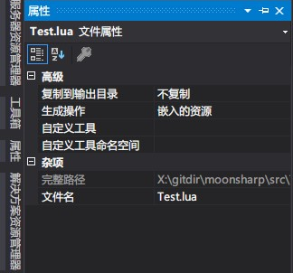

0x00
MoonSharp 是一个支持使用 C# 调用 Lua 的类库，这个系列是通过官网的教程来入门类库与 Lua。
如果有需要请配合我的代码食用。
0x01 Proxy objects
处于安全性和兼容性的考虑，使用 Proxy Objects，将实现细节封装，保证 API 不会调用任何不应调用的字段，让内部实现与 API 独立，因此可以在不破坏脚本的情况下修改内部的实现。为了不让封装 API 过于复杂，MoonSharp 提供了一种脚本 DTO，也就是 Proxy Objects.
DTO（Data Transfer Object，数据传输模型），是一个在进程之间传递数据的对象，常用在与远程接口的通讯上（如 web 服务）（expensive operation）。
这个概念非常简单。对于要封装的脚本所暴露的每种类型，必须提供“代理类型”类，它通过所封装的类型的一个实例类进行相关的操作。
这个示例就是示例，Github 里可以直接执行。
1 | // Declare a proxy class |
稍微理解一下，这里其实是通过 MyProxy 通过一个实例转调了 MyType 的方法，在脚本中访问 MyType 实际上是通过 MyProxy 进行的。
除了封装之外，可以使用“代理对象”完成一些巧妙的技巧。
一个非常简单，但非常有用的例子是提供对值类型的正确访问;
例如，你可以包装 Unity Transform 类——它完全由值类型组成，但本身是一个引用类型——使其具有不同的接口，并且可以正确保留引用！
（哈？）
0x02 Error handling
MoonSharp 从 InterpreterException 类型派生出了四种异常类型：
- InternalErrorException 解释器内部错误，脚本引擎致命错误，联系开发者吧？
- SyntaxErrorException 解释器无法解析脚本代码；
- ScriptRuntimeException 最常见的错误，引发 Lua 错误时会抛出，git 中有个例子，可以在 c# 中捕获异常，或向 lua 抛出异常（pcall 进行处理）。
- DynamicExpressionException 解释器遇到动态表达式（Dynamic expression，假装了解的样子……）错误时抛出。
当然，也可能由于调用代码或 MoonSharp 代码导致其他的异常，但至少理论上不会由脚本产生。上面的异常类型还有一个包含错误信息的 DecorativeMessage 属性，它使用抛出异常的源码的引用进行修饰。
0x03 Script Loaders
如何修改 MoonSharp 读取文件中脚本的方式。MoonSharp 旨在支持多平台，所以要适配用户选择的平台。因此 MoonSharp 提供了两个对象层级：
- Script loaders 用来自定义 API 如何从文件加载脚本，（emmmm，可以简单理解为用在 Script 类中咯）；
- Platform accessors 用来自定义如何完成对 OS 的低级访问。
预定义脚本加载器
根据使用的平台不同可以选择的脚本加载器：
- FileSystemScriptLoader：对文件系统上文件的原始访问，可以自定义，但是不支持可移植库；
- ReplInterpreterScriptLoader：与 FileSystemScriptLoader 相同，加上使用与 Lua 相同的逻辑来获取环境变量的路径（MOONSHARP_PATH，LUA_PATH 或 “?;?.lua”）；
- EmbeddedResourcesScriptLoader：提供对给定程序集的嵌入资源的访问，而非文件系统；
- InvalidScriptLoader：抛出异常；
- UnityAssetsScriptLoader：适用于 Unity3D，从文本资源加载脚本。
如果不重定义，MoonSharp 会使用的默认脚本加载器：
在 Unity 下，默认脚本加载器是 Assets/Resources/MoonSharp/Scripts 路径的 UnityAssetsScriptLoader，而文件名必须具有“.txt”扩展名，奇怪的 Unity 为什么只认识 txt。
如果构建可移植类库，选择 InvalidScriptLoader（除非执行某些操作，否则无法从文件进行加载）。
其他情况下，使用 FileSystemScriptLoade。
指定加载器
如果希望从当前程序集的嵌入资源加载，可以有两种方式（全局或局部）：
1 | // 给定一个 script 实例，指定此实例的加载器 |
require 方法
通常的需求是改变 require 方法使用的加载目录。脚本加载器扩展自 ScriptLoaderBase 类，通过修改 ModulePaths 属性即可。
1 | // These two lines are equivalent: |
如果想忽略 LUA_PATH（全局变量），可以这样：
1 | ((ScriptLoaderBase)script.Options.ScriptLoader).IgnoreLuaPathGlobal = true; |
使用 EmbeddedResourcesScriptLoader
很简单，在 VS 里：
- 在工程中创建一个“Scripts”文件夹；
- 添加文本文件重命名为“test.lua”；
- 写 Lua…
将文件添加到工程（添加文件夹直接拖拽到工程中就好，我不知道你会不会，反正我刚会……），然后将开开“.lua”的属性，修改“生成操作（Build Action）”为“嵌入的资源（Embedded Resource）”如图。

然后，就是最喜欢的写两行代码环节：
1 | static void EmbeddedResourceScriptLoader() |
那么，这种嵌入资源方式和直接读取文件有啥区别呢？
创建自己的脚本加载器
- 继承 ScriptLoaderBase（官方推荐）
- 实现 IScriptLoader
不言自明~
0x04 Platform accessors
平台访问器与脚本加载器非常相似（是不是可以结束这一 part 了）。
平台访问器提供了对操作系统 API 的访问，主要是 io，file 和 os 模块。
- StandardPlatformAccessor：实现所有相关方法；
- LimitedPlatformAccessor：禁用操作系统模块（构建可移植类库时默认使用）。
要注意的是，修改了平台访问器会影响所有脚本。一旦创建了脚本，就不应该更改平台访问器了。
类似地，要实现自己的平台访问器可以继承 PlatformAccessorBase 或实现 IPlatformAccessor。通常一些功能（打印输出重定向）都是可以通过脚本选项定制的。
0x05 Script options
Script 对象提供了选项来调整其行为，有全局和局部两种选项，放到附录请查阅。
本地选项可以为每一个 Script 对象实例赋不同的值。而全局选项通过 Script.GlobalOptions 访问，对所有脚本有效。
0xff
附录I
| 局部选项 | 描述 |
|---|---|
| ScriptLoader | This is the IScriptLoader for this script. See the section on script loaders for more details. |
| DebugPrint | This is a Action |
| DebugInput | This is a Func<string, string> delegate which will be called everytime MoonSharp requires line-input from a console, for example in the case of debug.debug. |
| UseLuaErrorLocations | If this is set to true, locations in error messages will only include the line numbers instead of lines and columns. Use this for compatibility with legacy Lua code which parses error messages. |
| Stdin, Stdout and Stderr | Default streams to be used in io/file functions. |
| TailCallOptimizationThreshold | This is quite a complex option. Basically Lua uses a technique to drammatically reduce stack usage in certain scenarios at the expense of simplicity and ease of debugging. MoonSharp can behave the same way, but by default doesn’t until it’s needed. This defines the threshold. Refer to the reference help for more details. |
| CheckThreadAccess | Again a complex and unusual option. MoonSharp does some sanity checks to prevent scripts being used by multiple threads concurrently. For reasons detailed in the reference help, these checks can have false positives and false negatives. If you are experiencing false positives, you can disable the checks with this option. But please check that you are not calling MoonSharp execution concurrently from two threads as it is not supported. |
| 全局选项 | 描述 |
|---|---|
| Platform | the platform accessor we learned about in the previous chapter |
| CustomConverters | the collection of all custom converters |